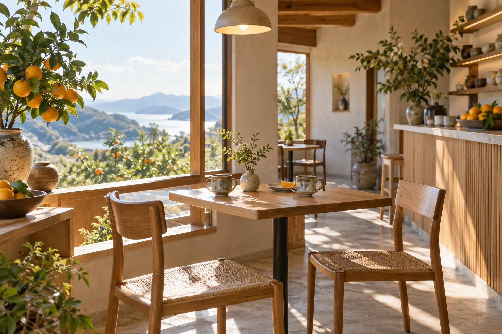

寄り道の、行き先。
来店前に知っておきたいことを、ひとつずつ。

INFORMATION / DEMO
店舗情報
- 所在地
- 正式住所のご支給後に掲載します
- 営業時間
- 正式な営業時間を確認後に掲載します
- 定休日
- 正式な定休日を確認後に掲載します
- アクセス
- 最寄り駅・駐車場情報を確認後に掲載します
MAP AREA 実店舗の住所未支給のため地図は表示していません。
BEFORE YOU GO
来店前の確認メモ
気になる項目を選ぶと確認事項をまとめられます。入力は送信されません。
GOOD TO KNOW
よくあるご質問
予約はできますか？
予約方法は未決定です。実店舗の運営方針を確認したうえで掲載します。
アレルギー情報はありますか？
正式な原材料と提供体制を確認後、正確な情報を掲載します。
駐車場はありますか？
店舗所在地と駐車場の有無を確認後にご案内します。